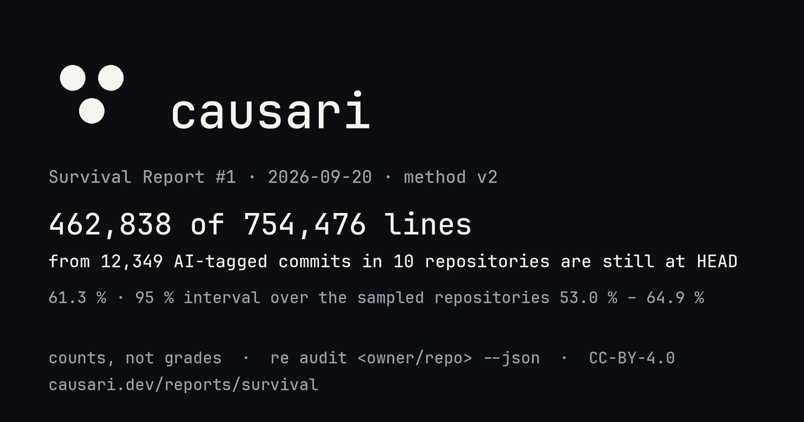

survival report #1 · 2026-09-20 · method v2 · causari 0.1.5 · unranked
Survival Report #1
462,838 of 754,476 lines introduced by 12,349 AI-tagged commits in 10 open-source repositories are still at HEAD (61.3 %). 95 % interval over the sampled repositories: 53.0 % to 64.9 %. These are counts, not grades. There is no rank, no colour and no verdict on this page; rows are alphabetical. Every number links to the audit bytes behind it and the method and its limits are public.
{kind=link}

Repositories
Alphabetical. VERIFIED commits only; PROBABLE counts are shown but never summed. Capped: no commit weighs more than the cap. Median per commit: the middle commit's own ratio. Largest commit: share of introduced lines from the single largest commit.
By agent, across the aggregated repositories
Alphabetical. A commit is attributed to the agent its metadata names; one agent per commit.
| Agent | Repositories | Commits | Lines introduced | Still at HEAD | Line-weighted |
|---|---|---|---|---|---|
| ai | 1 | 1 | 28 | 20 | 71.4 % |
| aider | 2 | 11,157 | 374,809 | 235,802 | 62.9 % |
| claude-code | 9 | 602 | 117,299 | 77,229 | 65.8 % |
| cursor | 6 | 165 | 24,979 | 18,204 | 72.9 % |
| gemini | 1 | 1 | 4 | 3 | 75.0 % |
| github-copilot | 6 | 67 | 55,707 | 23,094 | 41.5 % |
| jules | 1 | 1 | 4 | 0 | 0.0 % |
| openai-codex | 3 | 354 | 181,501 | 108,353 | 59.7 % |
| openhands | 1 | 1 | 145 | 133 | 91.7 % |
Excluded from this report
- Shallow clones (history truncated; method v2 refuses them): none.
- Audits that failed in this run: none.
- Opted out by their maintainers: 0. One line in
.github/survival-optout.txtremoves a repository from the next report, no questions asked.
Method
- Method v2, causari 0.1.5. Detection from commit metadata only; no model, no guess from the diff. Full text and known artefacts at causari.dev/method.
- Survival:
git blame -w -M -Cat HEAD, honouring.git-blame-ignore-revswhere present; a line counts for the commit blame attributes it to, capped at that commit's introduced count. - Cap rule: a commit weighs at most the 95th percentile of per-commit introduced line counts in its repository, and never more than 10,000 lines. The capped ratio is what one bulk commit cannot dominate.
- Sample floor: 5 VERIFIED commits. Below it a repository is measured but not aggregated.
- Intervals: 95 % percentile interval from 2000 bootstrap resamples of the 10 aggregated repositories (with replacement, seed 1). It describes the sampled repositories, not all AI-assisted code, and not the repositories not in this sample.
- Full clones only: method v2 refuses shallow clones; the workflow clones each repository completely before measuring.
- Reproduce or contest:
re audit <owner/repo> --jsongives the exact bytes behind a row; the bytes of this run are underrepos/next to this page. Open an issue with your JSON if it differs.
Cite as: Crovia Trust. Survival Report #1 (2026-09-20). https://causari.dev/reports/survival/2026/01/ DOI 10.5281/zenodo.22863966